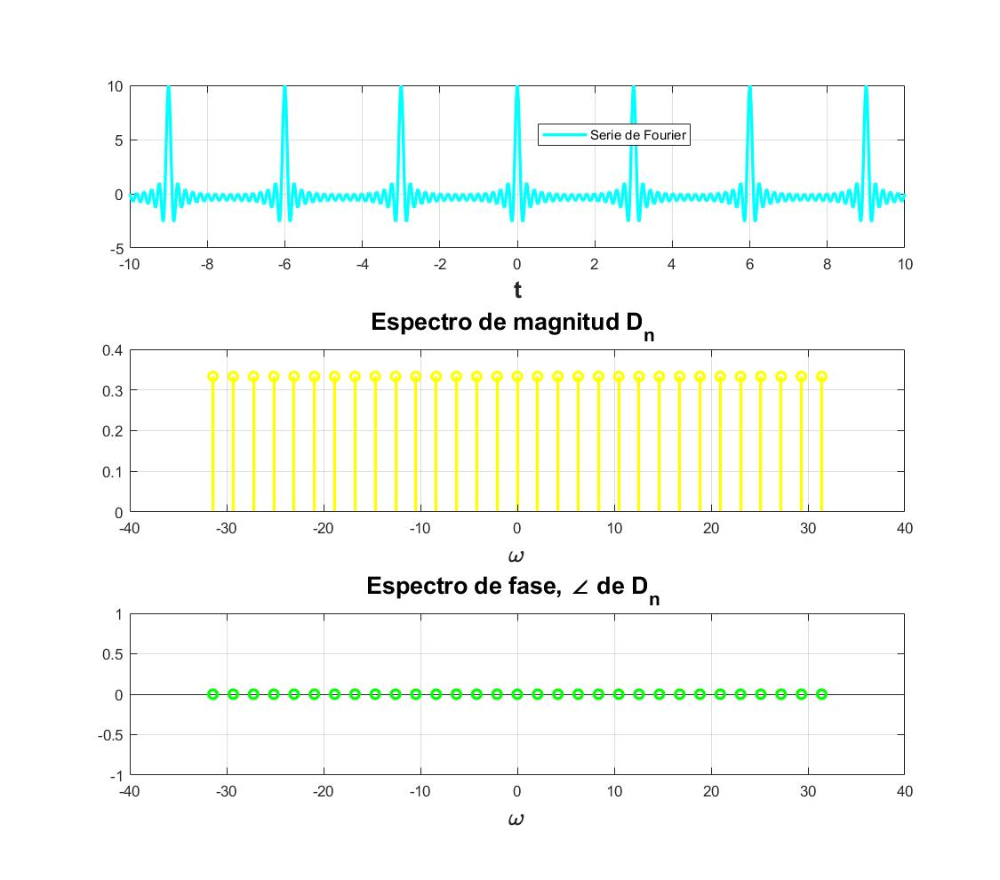

Practica 5 Series de Fourier en tiempo continuo
Grupo: 2TV2
Materia: Señales y Sistemas
Alumnos:
Espinosa Salas Emmanuel
Sandoval Palma Miguel Angel
Villegas Fraga Hamlet Ismael
Profesor: Dr. Rafael Martínez Martínez
Contents
- Objetivos
- Introduccion
- Ejemplo 6.1
- Ejemplo 6.2
- Ejemplo 6.4
- Ejemplo 6.5
- Ejemplo 6.7
- Elabore un código similar al COMPUTER EXAMPLE C6.2 que se encuentra al final de la sección 6.2 de Lathi para el Ejempo 6.2 con los datos indicados anteriormente (no utilice inline)
- Elabore un código que implemente el algoritmo de trapecio compuesto para , Utilice este código para aproximar del ejemplo de la práctica. Ahora implemente el código COMPUTER EXAMPLE C6.4 que se encuentra al final de la sección 6.6 de Lathi, y calcule nuevamente el los coeficientes del ejemplo propuesto. Muestre una tabla que contenga los coeficientes mencionados calculados con los dos algoritmos y de forma exacta, ¿Qué algortmo aproxima mejor a los coeficientes?, para esto compare los coefientes con el valor absoluto de la resta.
- Referencias
Objetivos
- Realizar gráficas de series de Fourier exponenciales y trigonométricas en tiempo continuo
- Manipulación de instrucciones en MATLAB
- Calculo númerico de los coeficientes de Fourier
Introduccion
con motivos de hacer se pueda visualizar mejor la introduccion se creo en un documento en latex y se cargo a internet(Github) a continuacion tiene el link de la investigacion.
Dar clickc Introdccucion
Ejemplo 6.1
a0= 0.504; an=@(n) 1.008/(1+16*n.^2); bn=@(n) (.504*(8.*n))/(1+16*n.^2); t0=0; tf=pi; f=@(t) exp(-t/2); armo=4; a=-7; b=7; sfc(t0,tf,an,bn,a0,f,armo,a,b)
a0= 0.504; an=@(n) 1.008/(1+16*n.^2); bn=@(n) (.504*(8.*n))/(1+16*n.^2); t0=0; tf=pi; f=@(t) exp(-t/2); armo=15; a=-7; b=7; sfc(t0,tf,an,bn,a0,f,armo,a,b)
Ejemplo 6.2
d0=0; dn=@(n) (3*(2*(-1).^n -2)*exp((-3*j*pi*n)/2))/(pi^2*n^2); t0=-1/2; tf=3/2; f=@(t) ((6.*t).*(heaviside(t+1/2)-heaviside(t-1/2)))+((6.*(1-t)).*(heaviside(t-1/2)-heaviside(t-3/2))); armo=4; a=-7; b=7; sfc(t0,tf,dn,d0,f,armo,a,b)
d0=0; dn=@(n) (3*(2*(-1).^n -2)*exp((-3*j*pi*n)/2))/(pi^2*n^2); t0=-1/2; tf=3/2; f=@(t) ((6.*t).*(heaviside(t+1/2)-heaviside(t-1/2)))+((6.*(1-t)).*(heaviside(t-1/2)-heaviside(t-3/2))); armo=15; a=-7; b=7; sfc(t0,tf,dn,d0,f,armo,a,b)

Ejemplo 6.4
d0=1/2; dn=@(n) sin((n*pi)/2)/(pi*n); t0=-pi; tf=pi; f=@(t) heaviside(t+pi/2)-heaviside(t-pi/2); armo=4; a=-15; b=15; sfc(t0,tf,dn,d0,f,armo,a,b)
d0=1/2; dn=@(n) sin((n*pi)/2)/(pi*n); t0=-pi; tf=pi; f=@(t) heaviside(t+pi/2)-heaviside(t-pi/2); armo=15; a=-15; b=15; sfc(t0,tf,dn,d0,f,armo,a,b)
Ejemplo 6.5
d0=0.504; dn=@(n) 0.504/(1+4*n*j); t0=0; tf=pi; f=@(t) exp(-t/2); armo=4; a=-7; b=7; sfc(t0,tf,dn,d0,f,armo,a,b)
d0=0.504; dn=@(n) 0.504/(1+4*n*j); t0=0; tf=pi; f=@(t) exp(-t/2); armo=15; a=-7; b=7; sfc(t0,tf,dn,d0,f,armo,a,b)
Ejemplo 6.7
d0=0; dn=@(n) 1/3; t0=-3/2; tf=3/2; f=@(t) dirac(t-n*3); armo=4; a=-10; b=10; nuestrosfc(t0,tf,dn,d0,f,armo,a,b)
d0=0; dn=@(n) 1/3; t0=-3/2; tf=3/2; f=@(t) dirac(t-n*3); armo=15; a=-10; b=10; nuestrosfc(t0,tf,dn,d0,f,armo,a,b)

Elabore un código similar al COMPUTER EXAMPLE C6.2 que se encuentra al final de la sección 6.2 de Lathi para el Ejempo 6.2 con los datos indicados anteriormente (no utilice inline)
t = linspace (-2*pi, 2*pi,100); sumterms = zeros(16, length(t)); sumterms(1,:) = 1/2; for n = 1:size(sumterms,1)-1; sumterms(n+1,:) = (2/(pi*n)*sin(pi*n/2))*cos(n*t); end x_N = cumsum(sumterms); figure(1); clf; ind = 0; for N = [0,1:2:size(sumterms, 1)] ind = ind+1; subplot (3,3,ind); plot (t,x_N(N+1),'k',t,X(t),'k--') axis ([-2*pi 2*pi -0.2 1.2]); end
Elabore un código que implemente el algoritmo de trapecio compuesto para , Utilice este código para aproximar del ejemplo de la práctica. Ahora implemente el código COMPUTER EXAMPLE C6.4 que se encuentra al final de la sección 6.6 de Lathi, y calcule nuevamente el los coeficientes del ejemplo propuesto. Muestre una tabla que contenga los coeficientes mencionados calculados con los dos algoritmos y de forma exacta, ¿Qué algortmo aproxima mejor a los coeficientes?, para esto compare los coefientes con el valor absoluto de la resta.
funcion = input('Ingrese la funcion \n f(x)=','s'); a = 0; % LÌmite inferior b = 0.4; % LÌmite superior n = 1; % N?mero de intervalos h = (b-a)/n; % Intervalo de integraciÛn f = 0; almacen{15,2} = []; ciclo para sacar todos los valores de n for n=1:15 for k = 1:n-1 x = a+h*k; f = f+eval(funcion); end f = 2*f; x = a; f = f+eval(funcion); x = b; f = f+eval(funcion); f = (h/2)*(f); almacen{n,1} = n; almacen{n,2} = abs(f); Muestra de resultados fprintf('El valor aproximado es: %10.15f para N = %d\n\n',abs(f),n) % Dn positivos end clc disp([ ' N ' funcion]) disp(' ')
Referencias
Capitulo 6 del Lathi
Documentacion de MatLab